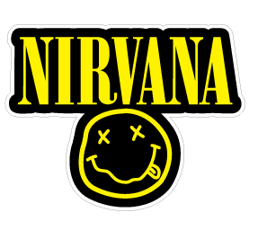
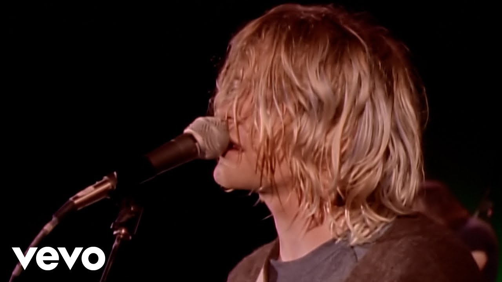

|
Nirvana foi uma banda de rock americana formada em Aberdeen, Washington, em 1987. A banda é frequentemente creditada por popularizar o gênero grunge e por ser uma das bandas mais influentes da década de 1990. O grupo era composto por Kurt Cobain (vocalista e guitarrista), Krist Novoselic (baixista) e Dave Grohl (baterista). Nirvana alcançou grande sucesso com seu segundo álbum, "Nevermind", lançado em 1991, que incluía o hit "Smells Like Teen Spirit". A banda se desfez em 1994 após a morte de Kurt Cobain. |
Nirvana além de ser uma das bandas mais influentes da década de 1990, também é conhecida por sua contribuição para a cultura pop e por seu impacto duradouro na música. A banda é frequentemente associada ao movimento grunge, que surgiu em Seattle e se tornou um fenômeno global. Nirvana é lembrada por suas letras introspectivas e por sua abordagem crua e autêntica à música, que ressoou com uma geração de fãs. O legado da banda continua a influenciar músicos e fãs em todo o mundo, mesmo décadas após sua formação. |
A influência de Nirvana se estende além da música, impactando a moda, a cultura e a atitude de uma geração. A banda é frequentemente associada a um estilo de vida alternativo e a uma estética grunge, que inclui roupas rasgadas, camisas de flanela e uma atitude desafiadora em relação às normas sociais. Nirvana também é lembrada por sua autenticidade e por sua capacidade de expressar emoções cruas através de sua música, o que ressoou profundamente com seus fãs. O legado da banda continua a ser celebrado e estudado por fãs e críticos de música em todo o mundo. |
Os Albuns do Nirvana são: Bleach, Nevermind, Incesticide, In Utero, MTV Unplugged in New York e From the Muddy Banks of the Wishkah. O mais famoso é o Nevermind, que tem a musica Smells Like Teen Spirit, que é a música mais famosa do Nirvana. O Nevermind é o segundo álbum do Nirvana, lançado em 1991, e é considerado um dos melhores álbuns de todos os tempos. O álbum foi um sucesso comercial e crítico, e ajudou a popularizar o gênero grunge. O Nevermind é conhecido por suas letras introspectivas e por sua abordagem crua e autêntica à música, que ressoou com uma geração de fãs. O álbum continua a ser celebrado e estudado por fãs e críticos de música em todo o mundo. |
|
 |
O Nirvana possuiu diversas logos pela sua carreira, mas a mais famosa é a logo do Smiley Face, que é um rosto sorridente com os olhos em forma de X. A logo foi criada por Kurt Cobain e é frequentemente associada à banda e ao movimento grunge. A logo do Smiley Face é conhecida por sua simplicidade e por sua capacidade de transmitir uma sensação de rebeldia e irreverência, que ressoou com uma geração de fãs. A logo continua a ser celebrada e estudada por fãs e críticos de música em todo o mundo. |
O nome da banda, Nirvana, é uma referência ao conceito budista de nirvana, que representa um estado de libertação do sofrimento e do ciclo de renascimento. Kurt Cobain escolheu o nome da banda porque ele achava que era um nome bonito e que tinha um significado profundo. O nome Nirvana é frequentemente associado à ideia de transcendência e de busca por um estado de paz interior, o que ressoou com a música e a atitude da banda. O nome continua a ser celebrado e estudado por fãs e críticos de música em todo o mundo. |
O Nirvana é frequentemente associado ao movimento grunge, que surgiu em Seattle no final dos anos 1980 e se tornou um fenômeno global na década de 1990. O movimento grunge é caracterizado por sua abordagem crua e autêntica à música, bem como por sua estética despojada e rebelde. O Nirvana é considerado uma das bandas mais influentes do movimento grunge, e sua música e atitude ajudaram a definir o som e a imagem do gênero. O legado do Nirvana continua a ser celebrado e estudado por fãs e críticos de música em todo o mundo, e a banda é frequentemente citada como uma das maiores influências na música rock. |
|
 |
O canal oficial do Nirvana no YouTube é uma fonte valiosa para os fãs da banda, oferecendo uma variedade de conteúdos relacionados à sua música e legado. O canal inclui videoclipes oficiais, apresentações ao vivo, entrevistas e documentários sobre a banda. Os fãs podem encontrar vídeos de performances icônicas, como o MTV Unplugged in New York, bem como clipes de músicas populares como "Smells Like Teen Spirit" e "Come As You Are". O canal também serve como um espaço para os fãs se conectarem e compartilharem seu amor pela música do Nirvana, mantendo viva a memória da banda e seu impacto duradouro na cultura musical. O canal foi feito em 2006 e tem mais de 1 milhão de inscritos, com uma variedade de vídeos relacionados à banda, incluindo videoclipes oficiais, apresentações ao vivo, entrevistas e documentários. O canal é uma fonte valiosa para os fãs da banda, oferecendo uma visão aprofundada do legado do Nirvana e permitindo que os fãs se conectem e compartilhem seu amor pela música da banda. O canal continua a ser atualizado regularmente com novos conteúdos relacionados à banda, mantendo viva a memória do Nirvana e seu impacto duradouro na cultura musical. Ele permanece tendo milhares de visualizações em seus vídeos, mostrando a popularidade contínua da banda e seu impacto duradouro na cultura musical. O canal do Nirvana no YouTube é uma plataforma importante para os fãs da banda, permitindo que eles se conectem e compartilhem seu amor pela música do Nirvana, mantendo viva a memória da banda e seu impacto duradouro na cultura musical. |
Alem do canal no youtube o Nirvana possui mais redes sociais dentre elas o Instagram, Twitter e Facebook. O Instagram do Nirvana é uma plataforma onde os fãs podem encontrar uma variedade de conteúdos relacionados à banda, incluindo fotos, vídeos e atualizações sobre eventos e lançamentos. O Instagram é uma fonte valiosa para os fãs da banda, oferecendo uma visão aprofundada do legado do Nirvana e permitindo que os fãs se conectem e compartilhem seu amor pela música da banda. O Instagram do Nirvana é atualizado regularmente com novos conteúdos relacionados à banda, mantendo viva a memória do Nirvana e seu impacto duradouro na cultura musical. Mesmo após a morte de Kurt Cobain, o Instagram do Nirvana continua a ser uma plataforma importante para os fãs da banda, permitindo que eles se conectem e compartilhem seu amor pela música do Nirvana, mantendo viva a memória da banda e seu impacto duradouro na cultura musical. |